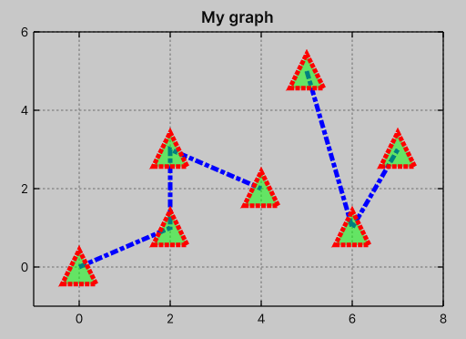

Plot with lines points
Data
This plot type is a combination of PlotWithLines and PlotWithPoints.
See the Plot types/Plot with lines and Plot types/Plot with points sections for more details.
var graph = new Graph { ... };
var data = new float2[] { ... };
graph.PlotWithLinesPoints(data);
Styling
It shares the same styling properties as PlotWithLines and PlotWithPoints.

.my-plot {
--graph-line-color: rgb(0,0,255);
--graph-line-width: 4;
--graph-line-dash-pattern: "7 2 4 2";
--graph-point-width: 4;
--graph-point-size: 15;
--graph-point-color: rgb(255,0,0);
--graph-point-fill-color: rgba(0, 255, 0, 0.5);
--graph-point-dash-pattern: "4 1";
--graph-point-style: 9;
}